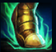
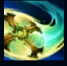
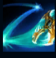
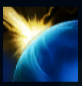
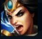

Sivir
| Sivir The Batlle Mistress | |
|---|---|
| Release date | 21.04.2009 |
| Class | Marksman |
| Positions | Bot |
| Resource | Mana |
| Range type | Ranged |
| Adaptive type | Physical |
| Base statistics | |||
| Health | 562 – 2092 | Mana | 325-1175 |
| Health regen. | 7 – 19.75 |
Mana regen. | 7.5-16.85 |
| Armor | 38 – 70 | Attack damage | 52 – 99.6 |
| Magic resist. | 30 – 38.5 | Crit. damage | 175% |
| Move. speed | 335 | Attack range | 500 |
Sivir este o renumită vânătoare de recompense și căpitan de mercenari ce își desfășoară activitatea în deșerturile Shurimei. Înarmată cu un legendar bumerang în cruce, a câștigat nenumărate lupte în numele celor care își permit s-o angajeze. Sivir este cunoscută pentru hotărârea ei de neclintit și pentru ambiția-i nemăsurată, calități de care se folosește pentru a descoperi comori ascunse în cavourile Shurimei – în schimbul unor sume generoase de galbeni, desigur. Acum că Shurima este cutremurată de apariția unor forțe străvechi, Sivir se află la răscrucea dintre două destine contradictorii. |  |
GRABĂ Sivir primește un bonus scurt la viteza de mișcare când atacă un campion inamic |
||
|---|---|---|---|---|
 |
BUMERANG ÎN CRUCE Sivir își aruncă arma ca pe un bumerang, provocând daune și la dus și la întors. |
|||
 |
RICOȘEU Următoarele câteva atacuri de bază ale lui Sivir vor ricoșa de țintele din apropiere, provocându-le daune reduse țintelor secundare. |
|||
|  |
SCUT ANTI-VRĂJI Creează o barieră magică ce blochează o singură abilitate folosită de un adversar asupra lui Sivir. Sivir primește înapoi mană dacă scutul blochează vreo vrajă. |
|||
 |
LA VÂNĂTOARE Sivir își conduce aliații în luptă, oferindu-le viteză de mișcare mărită pentru o anumită perioadă de timp. În plus, îi oferă în mod pasiv lui Sivir viteză de atac bonus cât timp ''Ricoșeu'' este activ. |